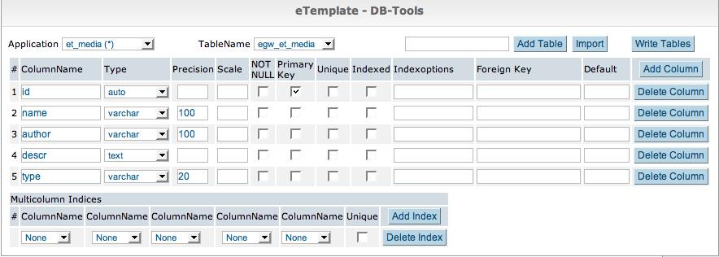
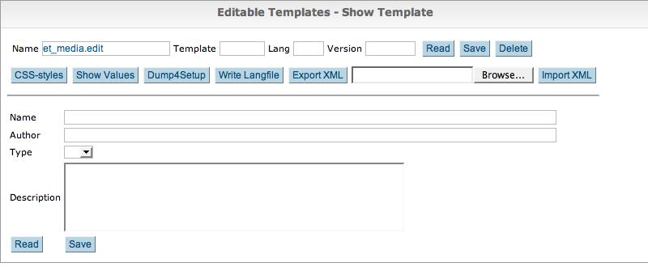
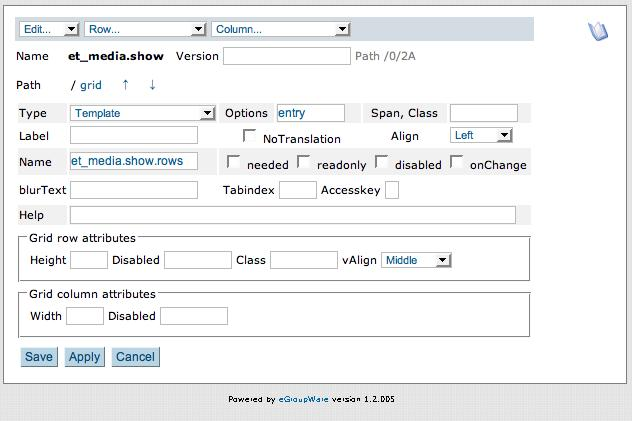
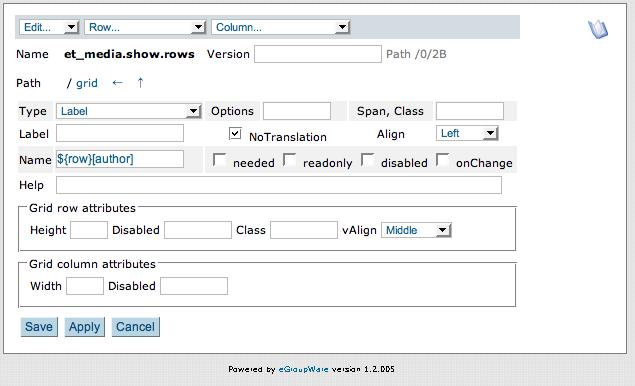
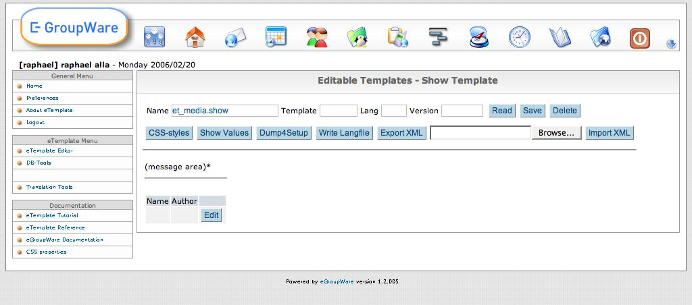
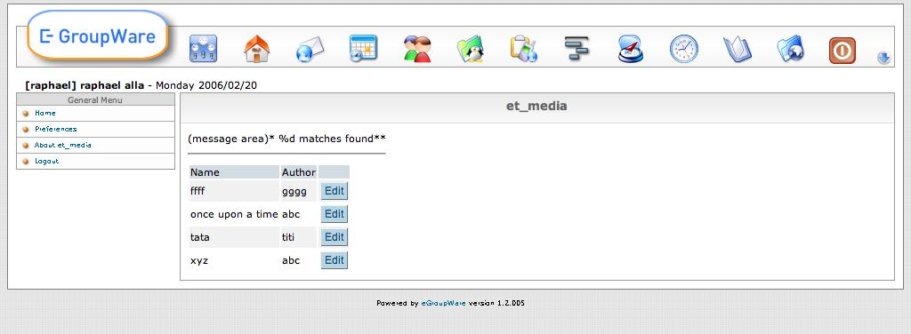

Double click on the pink spot will bring the following dialog:
The top row allows you to add column and rows to the template. We will need 2 columns and 6 rows
A developers tutorial how to write an application with the new eTemplates.
It is also an introduction how to write a eGW- and setup(3)-compatible app.
The eTemplates
they encapsulate different UI (User Interface) types from the app: at the moment only a HTML one is ready,
but a GTK one (using php-gtk, running
as native app under Linux and win32) and XUL is under development.
Here is a first screenshot of the DB-Tools as native
Linux Application:
As an example we will run now through the necessary steps to create a simple media database using eTemplates and other tools and classes from the eTemplate app: db-tools and class.so_sql.inc.php.
Out media database should have the usual fields: name, author, description, type: BOOK, CD, VIDEO and should be able to edit records and search for them.
As a pre-acquistion you need to get / checkout the etemplate app, install the app via setup/manage applications and enable your account for using the app (Admin/User account: check eTemplates).
Each app need a name, eg. 'et_media'. We now need to create the following directory structure above the eGroupWare dir:
et_media that has to be identical to our app-name
+ setup files necessary for the setup program, give the webserver write-permission to that dir
+ inc class-files
+ templates templates, still needed to store the images and get around a lot of complains from the API
+ default
+ images here goes our images / iconsThat files contains the necessary information for setup to install the app.
<?php
$setup_info['et_media']['name'] = 'et_media';
$setup_info['et_media']['title'] = 'eT-Media';
$setup_info['et_media']['version'] = '1.2';
$setup_info['et_media']['app_order'] = 100; // at the end
$setup_info['et_media']['tables'] = array('egw_et_media');
$setup_info['et_media']['enable'] = 1;
/* Dependencies for this app to work */
$setup_info['et_media']['depends'][] = array(
'appname' => 'phpgwapi',
'versions' => Array('1.2','1.3','1.4')
);
$setup_info['et_media']['depends'][] = array(
'appname' => 'etemplate',
'versions' => Array('1.2','1.3','1.4')
);To enable setup to create a db-table for us and to supply the so_sql-class with the necessary information, we need to define the type and size of the fields / columns in our db-table.

We
can use the db-Tools from the etemplate application to create the
file for us:
you can now log out from setup, the db-table is now created
In order to be able to use your eT-Media application, do not forget to give yourself access to it (Admin/User account: check eT-Media)
Now we need a nice edit dialog and use the eTemplate editor to set it up:
Complete the template as follows. The widget used for "type" is a Selectbox, the one used for "description" is a textarea. Note that the name of the input is "descr" and not description, as this is the name of the column in the table. Finally on the last row we have two widgets of type "Submitbutton" of names "read" and "save" and of corresponding label.

Then before moving to the next stage save the template as an XML file by clicking on "Export XML". Once again the server must have write permissions on the directory.
The index page is only used if someone clicks on the navbar icon
(or on the black cross as we haven't supplied one so far).
Create
the file /et_media/index.php with the following content:
<?php
$GLOBALS['phpgw_info']['flags'] = array(
'currentapp' => 'et_media',
'noheader' => True,
'nonavbar' => True
);
include('../header.inc.php');
$GLOBALS['egw']->redirect_link('/index.php', 'menuaction=et_media.ui_et_media.edit');
An eGroupWare application is organized around 3 application layers:
For this, we create 2 files in the "inc" directory, called class.bo_et_media.inc.php and class.ui_et_media.inc.php. In this simple application, the bo layer will be fairly minimal, this said it is a good idea to create the application using the right standards from the start.
Here is the file /et_media/inc/class.bo_et_media.inc.php:
<?php /** * eGroupWare editable Templates - Example media database (et_media) * * @license http://opensource.org/licenses/gpl-license.php GPL - GNU General Public License * @package etemplate * @subpackage et_media * @link http://www.egroupware.org * @author Ralf Becker <RalfBecker@outdoor-training.de> */ include_once(EGW_INCLUDE_ROOT . '/etemplate/inc/class.so_sql.inc.php'); /** * Business object for et_media */ class bo_et_media extends so_sql { /** * Available media types * * @var array */ var $types = array( '' => 'Select one ...', 'cd' => 'Compact Disc', 'dvd' => 'DVD', 'book' => 'Book', 'video' => 'Video Tape' ); /** * Constructor initializing so_sql * * @return so_et_media */ function bo_et_media() { $this->so_sql('et_media','egw_et_media'); // calling the constructor of the extended bo object $this->empty_on_write = "''"; } }
And finally the start of the /et_media/inc/class.ui_et_media.inc.php:
<?php /** * eGroupWare editable Templates - Example media database (et_media) * * @license http://opensource.org/licenses/gpl-license.php GPL - GNU General Public License * @package etemplate * @subpackage et_media * @link http://www.egroupware.org * @author Ralf Becker <RalfBecker@outdoor-training.de> */ include_once(EGW_INCLUDE_ROOT . '/et_media/inc/class.bo_et_media.inc.php'); class ui_et_media extends bo_et_media { /** * Public functions callable via menuaction * * @var array */ var $public_functions = array( 'edit' => True, ); /** * Constructor * * @return ui_et_media */ function ui_et_media() { $this->bo_et_media(); // calling the constructor of the extended bo object $this->tmpl =& CreateObject('etemplate.etemplate','et_media.edit'); } /** * Edit a media database entry * * @param array $content=null * @param string $msg='' */ function edit($content=null,$msg = '') { if (is_array($content)) // not first call from index { if ($content['id'] > 0) { $this->read($content); } //echo "<p>edit: content ="; _debug_array($content); $this->data_merge($content); //echo "<p>edit: data ="; _debug_array($this->data); if (isset($content['save'])) { $msg .= !$this->save() ? lang('Entry saved') : lang('Error: while saving !!!'); } } // now we fill in the content array for the next call to etemplate.exec $content = $this->data + array( 'msg' => $msg ); $sel_options = array( 'type' => $this->types ); $this->tmpl->exec('et_media.ui_et_media.edit',$content,$sel_options,$no_button,array( 'id' => $this->data['id'] )); }
The edit function is called from our index.php file or as callback for this form / dialog. In that case $content is an array with the content the user put into the fields of the dialog.
Let first have a look what happened if we called the first time (or what we do to show the dialog again with the changed data):
at last we call etemplate::exec to show the template with the content from $content and set the function itself as callback for the dialog / form.
Now let's have a look what happens if the user submits the form and our callback is called:
after that the content array is filled again as described above.
Now we are able to store entries in the db and retrieve them by searching the database for patterns in the different fields. You can try your new application now. You can create new records and save them. By just entering the name or author, the database will find the corresponding match and populate the form for you.
We are only lacking some way to show if we get more than one
match on a search, that's what we are going to implement next:
First we need to create an other eTemplate to show the list: 'et_media.show' as follows. This is made of a label of name "msg" (to display messages), an HorizontalRule widget, and a Template widget: we will use a "sub template" called et_media.show.rows to display the rows of the search function. I have set the option of the template widget to "entry" as this is the name we will use to access to the data in the sub-template.

The 'et_media.show.rows' template is created as a 3x2 table. On the header row, two labels "Name" and "Author" and one empty cell.
ond row, two labels of name ${row}[name] and ${row}[author]. In the last cell a submitButton of label "Edit" and of name "edit[$row_cont[id]]"

The class of the header row is "th" and the class of the content row is "row". eTemplate will automatically vary the colors of the "row" class to provide a nice visual effect.
Here is a view of the et_media.show template once the two templates have been created:

We need some code / a function in the class to call the template and fill the content:
/** * Showing entries from the media database * * @param array $found */ function show($found=null) { if (!is_array($found) || !count($found)) { $this->edit(); return; } array_unshift($found,false); // change the array to start with index 1 $content = array( 'msg' => lang('%1 matches on search criteria',count($found)-1), 'entry' => $found, ); $this->tmpl->read('et_media.show'); $this->tmpl->exec('et_media.ui_et_media.edit',$content); } }
This function is called by edit with the matches of a search:
To call the show function, we need to make some changes to the edit-function too:
elseif (isset($content['read']))
{
unset($content['id']); // not set by user, so don't use for search
unset($content['read']);
$found = $this->search($content,False,'name,author'); // searches by using the no-empty fields
if (!$found)
{
$msg .= lang('Nothing matched search criteria !!!');
}
elseif (count($found) == 1)
{
$this->init($found[0]); // only one match --> show it in the editor
}
else
{
$this->show($found); // multiple matches --> use the show function/template
return;
}
}
elseif (isset($content['entry']['edit'])) // the callback from for the show function/template
{ // the id is set via the button name of '$row_cont[id]'
list($id) = each($content['entry']['edit']); // note its not only ['edit'] !!!
if ($id > 0)
{
$this->read(array('id' => $id));
}
}
This is what the new "show" template looks like:

While making these changes we can add a [Cancel] and [Delete] button too:
elseif (isset($content['cancel']))
{
$content = array(); // clear the contents
}
elseif (isset($content['delete']))
{
$this->bo->so->delete($r_id);
$content = array(); // clear the content
}
$no_button = array( // no delete button if id == 0 --> entry not saved
'delete' => !$this->content['id'];
);
the last block checks if the id field is set (it can only be set by a read or save) and disables the [Delete] button if not ($this->db_key_cols[$this->autoinc_id] == 'id').
Of course we have to add this buttons to the template 'et_media.edit'. I trust you can add 2 submit buttons with the names 'cancel' and 'delete', a Label and a nice help messages by now without looking at a screenshot ;-).
The eTemplate is saved in the eGroupware database. If changes done to the eTemplate should be reverted, a eTemplate setup file is required, see section Dumping the eTemplate to a File for Distribution. Note that reverting only works if a valid version has previously been dumped to a distribution file or if a new revision identifier of the template has been used to save the changes.
To get rid of the stars '*' behind each Label and to be able to
translate the app in other languages we need to create a
lang-file
There are 2 possibilities to create it automatically:
To be able to put the eTemplates in CVS and to ship them with your app, you need to dump them in a file first.
This is done in the eTemplate editor by putting the app-name or an template-name in the Name field and clicking on the button [Dump4Setup]. This creates the file et_media/setup/etemplates.inc.php. The eTemplate-class loads this file whenever it finds a new version automatically.
To recover a changed eTemplate to the state saved in the distribution file, the following steps need to be performed:
In case the modification was done in a sub-template, e.g. the definition of the rows in a list view, the correct (sub-) template name and version needs to be chosen for deletion. It is visible in the edit window of the elements modified.
Please note: All files of the et_media example can be found in the et_media sub-directory of etemplate's doc directory. Symlinking or coping to the eGroupWare install directory, allows to immediately install it via setup.
for setup, the necessary files of an app or the format of tables_current.inc.php look at the excellent docu of setup3 in the doc-dir of the setup app.